Chapter 2 Batch effect detection
In this chapter, we apply qualitative methods and diagnostic plots to visually assess the presence of batch effects.
2.1 Principal component analysis (PCA) with density plot per component
PCA is an unsupervised method used to explore the data variance structure by reducing its dimensions to a few principal components (PC) that explain the greatest variation in the data. Density plots are a complementary way to visualise batch effects per PC through examining the distributions of all samples.
First, we run a good old PCA on the data, to assess whether major sources of variation can be explained by batch effects: in cases where batch effects account for a large source of variation in the data, the scatter plot of the top PCs should highlight a separation of the samples due to different batches. Plotting density plots on each component helps to visualise whether it is the case: samples within a batch will show similar distributions, and samples across different batches will show different distributions, if there is a batch effect.
# sponge data
sponge.pca.before <- pca(sponge.tss.clr, ncomp = 3)
# ad data
ad.pca.before <- pca(ad.clr, ncomp = 3)
# hd data
hd.pca.before <- pca(hd.clr, ncomp = 3)# sponge data
Scatter_Density(data = sponge.pca.before$variates$X, batch = sponge.batch,
trt = sponge.trt, expl.var = sponge.pca.before$explained_variance,
xlim = c(-4.5,5), ylim = c(-3,4),
batch.legend.title = 'Gel (batch)',
trt.legend.title = 'Tissue (trt)',
title = 'Before batch effect correction (Sponge)')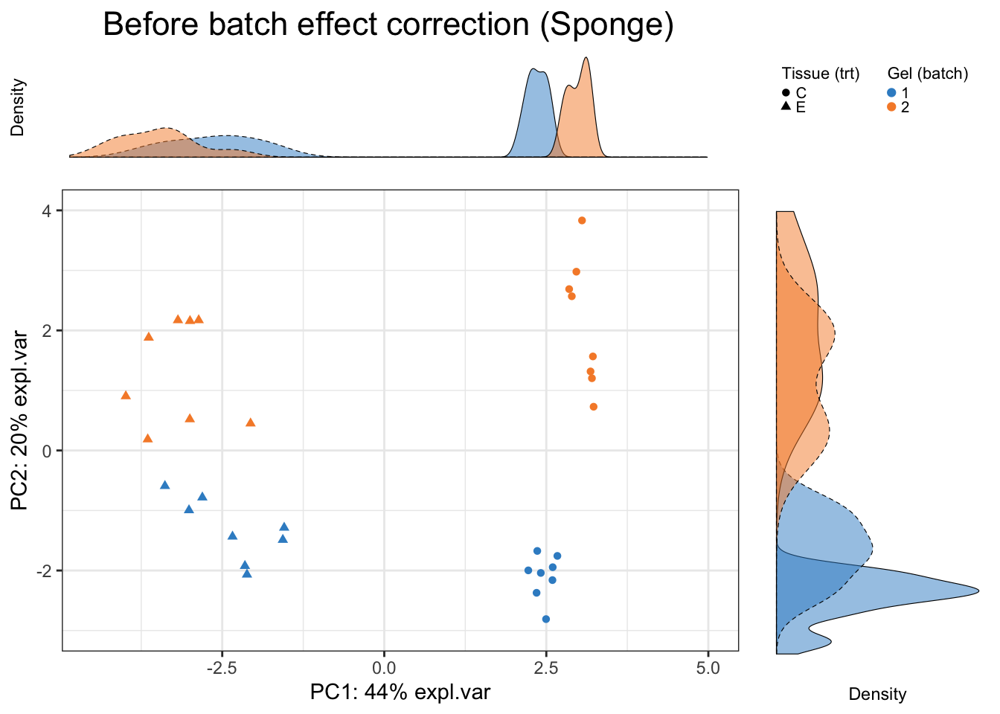
In sponge data, the first PC (explaining the largest source of variation) shows variation between samples from different tissues (the effect of interest), while the second PC (explaining the second largest source of variation) displays sample differences due to different batches, as also highlighted in the density plots per component. Therefore, PCA plots can inform not only of the presence of batch effects, but also which variation is the largest in the data. In this particular dataset, the effect of interest variation is larger than batch variation.
# ad data
Scatter_Density(data = ad.pca.before$variates$X, batch = ad.batch,
trt = ad.trt, expl.var = ad.pca.before$explained_variance,
xlim = c(-15,14), ylim = c(-13,14),
batch.legend.title = 'Date (batch)',
trt.legend.title = 'Conc (trt)',
title = 'Before batch effect correction (AD)')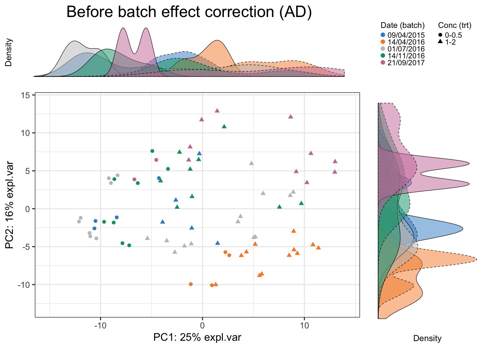
In AD data, we observe a separation of samples from batch 14/04/2016. The batch variation is mostly explained by the second PC.
# hd data
Scatter_Density(data = hd.pca.before$variates$X, batch = hd.batch,
trt = hd.trt, expl.var = hd.pca.before$explained_variance,
xlim = c(-20,20), ylim = c(-25,15),
batch.legend.title = 'Cage (batch)',
trt.legend.title = 'Genotype (trt)',
title = 'Before batch effect correction (HD)')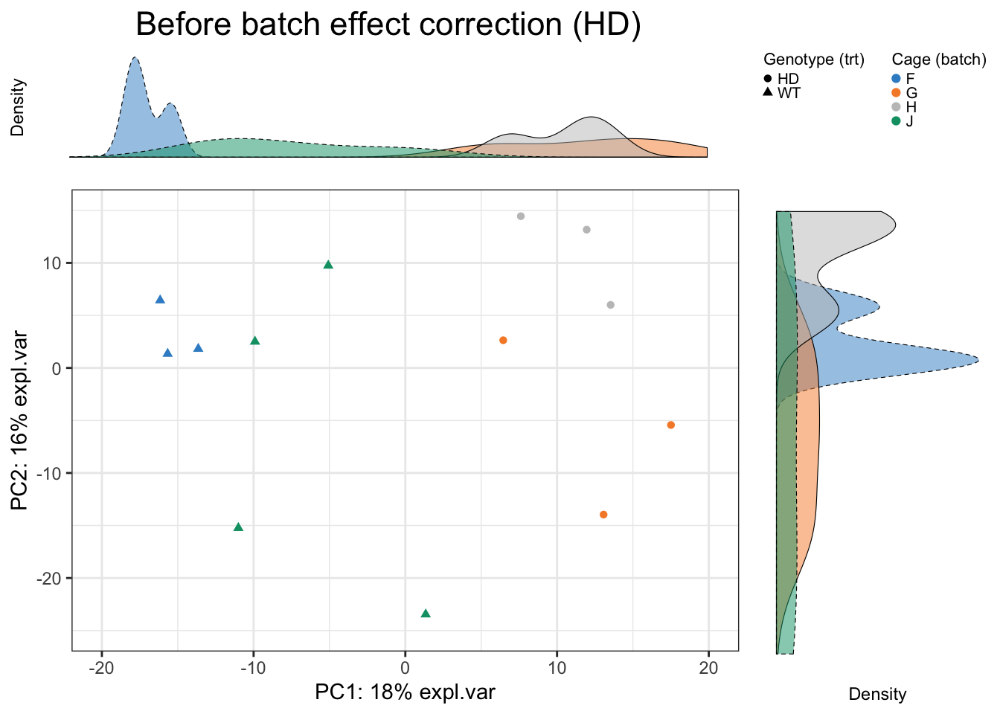
In HD data, batch effect is due to different cages and obvious. The batch variation is both explained by the first and second PC.
2.2 Density plot and box plot
For non systematic batch effects, it is useful to visualise a few OTUs individually. We apply density plots and box plots on OTUs, one at a time from each dataset to visualise batch effects. But only one OTU each dataset is selected as examples.
We randomly select OTU9 in sponge data, and generate density plots and box plots separately across samples within each batch to observe whether batch effects serve as a major source of variation.
# sponge data
sponge.before.df <- data.frame(value = sponge.tss.clr[,9], batch = sponge.batch)
box_plot_fun(data = sponge.before.df, x = sponge.before.df$batch,
y = sponge.before.df$value, title = 'OTU9 (Sponge)',
batch.legend.title = 'Gel (batch)')ggplot(sponge.before.df, aes(x = value, fill = batch)) +
geom_density(alpha = 0.5) + scale_fill_manual(values = color.mixo(1:10)) +
labs(title = 'OTU9 (Sponge)', x = 'Value', fill = 'Gel (batch)') +
theme_bw() + theme(plot.title = element_text(hjust = 0.5),
panel.grid = element_blank())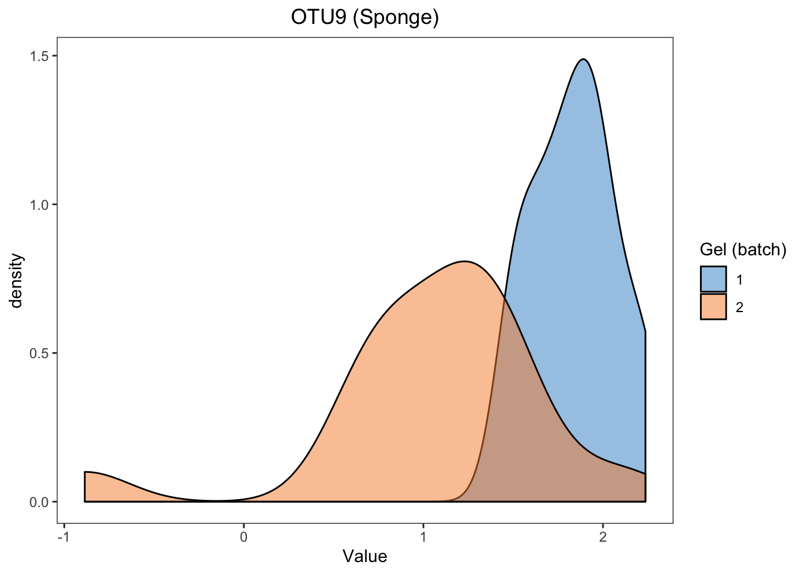
For the proportional abundance of OTU9, the samples within different batches are very distinct, indicating a strong batch effect in sponge data.
Assuming the data fit the distribution of the linear model (which is the case here after CLR transformation), we can also assess the effect of batch in a linear model on that particular OTU9:
sponge.lm <- lm(sponge.tss.clr[,9] ~ sponge.trt + sponge.batch)
summary(sponge.lm)##
## Call:
## lm(formula = sponge.tss.clr[, 9] ~ sponge.trt + sponge.batch)
##
## Residuals:
## Min 1Q Median 3Q Max
## -1.87967 -0.24705 0.04588 0.24492 1.00757
##
## Coefficients:
## Estimate Std. Error t value Pr(>|t|)
## (Intercept) 1.7849 0.1497 11.922 1.06e-12 ***
## sponge.trtE 0.1065 0.1729 0.616 0.543
## sponge.batch2 -0.7910 0.1729 -4.575 8.24e-05 ***
## ---
## Signif. codes: 0 '***' 0.001 '**' 0.01 '*' 0.05 '.' 0.1 ' ' 1
##
## Residual standard error: 0.489 on 29 degrees of freedom
## Multiple R-squared: 0.4236, Adjusted R-squared: 0.3839
## F-statistic: 10.66 on 2 and 29 DF, p-value: 0.0003391The batch (gel) effect is statistically significant (P \(<\) 0.001), as indicated in the sponge.batch2 row.
# ad data
ad.before.df <- data.frame(value = ad.clr[,1], batch = ad.batch)
box_plot_fun(data = ad.before.df,x = ad.before.df$batch,
y = ad.before.df$value, title = 'OTU12 (AD)',
batch.legend.title = 'Date (batch)',
x.angle = 45, x.hjust = 1)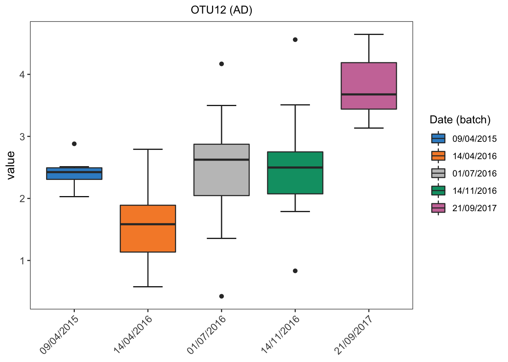
ggplot(ad.before.df, aes(x = value, fill = batch)) +
geom_density(alpha = 0.5) + scale_fill_manual(values = color.mixo(1:10)) +
labs(title = 'OTU12 (AD)',x = 'Value',fill = 'Date (batch)') +
theme_bw() + theme(plot.title = element_text(hjust = 0.5),
panel.grid = element_blank())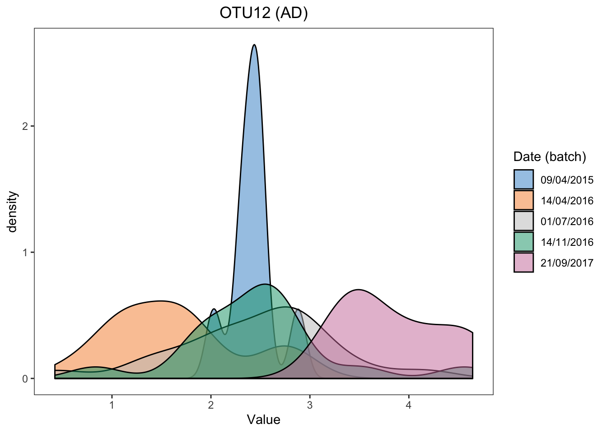
Batch effects in AD data are also easily visualised.
ad.lm <- lm(ad.clr[,1] ~ ad.trt + ad.batch)
anova(ad.lm)## Analysis of Variance Table
##
## Response: ad.clr[, 1]
## Df Sum Sq Mean Sq F value Pr(>F)
## ad.trt 1 1.460 1.4605 3.1001 0.08272 .
## ad.batch 4 32.889 8.2222 17.4532 6.168e-10 ***
## Residuals 69 32.506 0.4711
## ---
## Signif. codes: 0 '***' 0.001 '**' 0.01 '*' 0.05 '.' 0.1 ' ' 1In AD data, the difference between batches (dates) is statistically significant (P < 0.001, as tested with ANOVA). We can also obtain P values between each two batch categories.
summary(ad.lm)##
## Call:
## lm(formula = ad.clr[, 1] ~ ad.trt + ad.batch)
##
## Residuals:
## Min 1Q Median 3Q Max
## -2.09885 -0.39613 -0.00381 0.36645 1.98185
##
## Coefficients:
## Estimate Std. Error t value Pr(>|t|)
## (Intercept) 2.311213 0.247768 9.328 7.57e-14 ***
## ad.trt1-2 0.203619 0.171183 1.189 0.23833
## ad.batch14/04/2016 -0.828100 0.287918 -2.876 0.00535 **
## ad.batch01/07/2016 0.007239 0.273672 0.026 0.97897
## ad.batch14/11/2016 0.062689 0.282978 0.222 0.82533
## ad.batch21/09/2017 1.361132 0.306373 4.443 3.30e-05 ***
## ---
## Signif. codes: 0 '***' 0.001 '**' 0.01 '*' 0.05 '.' 0.1 ' ' 1
##
## Residual standard error: 0.6864 on 69 degrees of freedom
## Multiple R-squared: 0.5138, Adjusted R-squared: 0.4786
## F-statistic: 14.58 on 5 and 69 DF, p-value: 9.665e-10# hd data
hd.before.df <- data.frame(value = hd.clr[,1], batch = hd.batch)
box_plot_fun(data = hd.before.df, x = hd.before.df$batch,
y = hd.before.df$value,title = 'OTU1 (HD)',
batch.legend.title = 'Cage (batch)')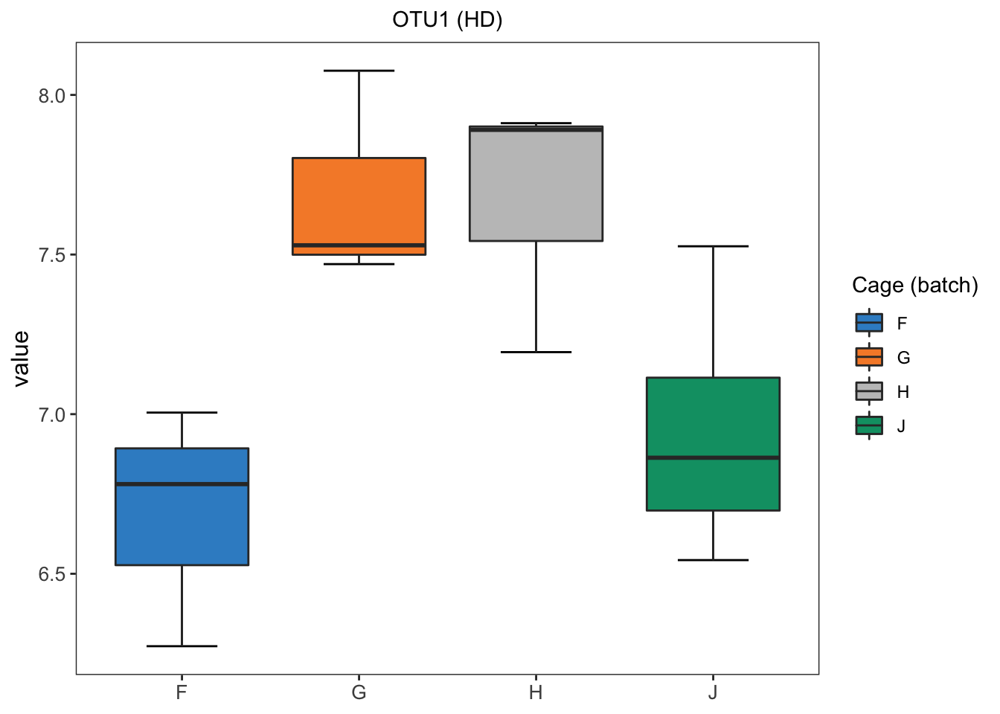
ggplot(hd.before.df, aes(x = value, fill = batch)) +
geom_density(alpha = 0.5) + scale_fill_manual(values = color.mixo(1:10)) +
labs(title = 'OTU1 (HD)',x = 'Value',fill = 'Cage (batch)') +
theme_bw() + theme(plot.title = element_text(hjust = 0.5),
panel.grid = element_blank())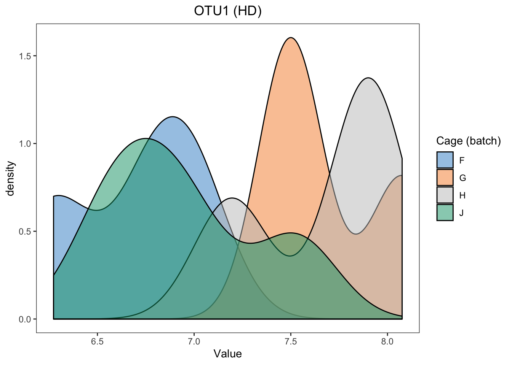
In HD data, we easily detect the differences between samples within different batches.
hd.lm <- lm(hd.clr[,1] ~ hd.batch)
anova(hd.lm)## Analysis of Variance Table
##
## Response: hd.clr[, 1]
## Df Sum Sq Mean Sq F value Pr(>F)
## hd.batch 3 2.4108 0.80359 5.2569 0.02276 *
## Residuals 9 1.3758 0.15286
## ---
## Signif. codes: 0 '***' 0.001 '**' 0.01 '*' 0.05 '.' 0.1 ' ' 1As the batch x treatment design of HD data is nested and unbalanced, the linear model with both treatment (genotype) and batch (cage) is unable to fit. We therefore fit a linear model with batch effect only. The difference between cages is statistically significant (P < 0.05). But the difference may also be influenced by treatment and we are unable to exclude treatment influence.
2.3 RLE plots
RLE plots can be plotted using ‘RleMicroRna’ in R package ‘AgiMicroRna’. Here, we made some changes on the function ‘RleMicroRna’, called ‘RleMicroRna2’ and available on our extra functions ‘Functions.R’.
RLE plots are based on the assumption that the majority of microbial variables are unaffected by the effect of interest, and therefore any sample heterogeneity observed - i.e. different distributions and their variances, and medians different from zero, should indicate the presence of batch effects. In our case studies, the treatment information is known, so we generate multiple RLE plots per treatment group, as suggested by (Lin et al. 2018).
In sponge data, we group the samples according to the tissue (choanosome / ectosome) and generate two RLE plots:
# sponge data
sponge.batch_c <- sponge.batch[sponge.trt == 'C']
sponge.batch_e <- sponge.batch[sponge.trt == 'E']
sponge.before_c <- sponge.tss.clr[sponge.trt == 'C', ]
sponge.before_e <- sponge.tss.clr[sponge.trt == 'E', ]
RleMicroRna2(object = t(sponge.before_c), batch = sponge.batch_c,
maintitle = 'Sponge (tissue: choanosome)')
RleMicroRna2(object = t(sponge.before_e), batch = sponge.batch_e,
maintitle = 'Sponge (tissue: ectosome)')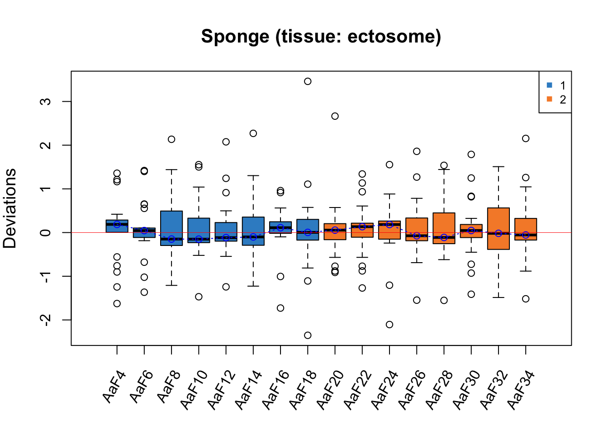
For both RLE plots with samples from different tissues, the batch effect is not obvious as all medians of samples are close to zero, but Gel2 has a greater interquartile range (IQR) than the other samples.
# ad data
ad.batch_05 <- ad.batch[ad.trt == '0-0.5']
ad.batch_2 <- ad.batch[ad.trt == '1-2']
ad.before_05 <- ad.clr[ad.trt == '0-0.5', ]
ad.before_2 <- ad.clr[ad.trt == '1-2', ]
RleMicroRna2(object = t(ad.before_05), batch = ad.batch_05,
maintitle = 'AD (initial phenol conc: 0-0.5 g/L)',
legend.cex = 0.5)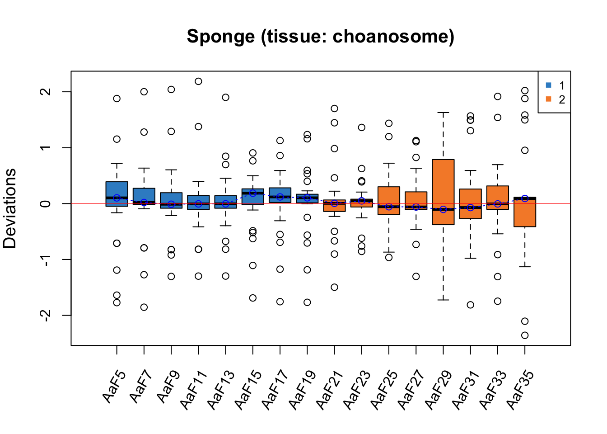
RleMicroRna2(object = t(ad.before_2), batch = ad.batch_2,
maintitle = 'AD (initial phenol conc: 1-2 g/L)',
cex.xaxis = 0.7, legend.cex = 0.5)
In RLE plots for the AD data, the batch effect is also not obvious as all medians of samples are close to zero, but the samples dated 14/04/2016 may be affected by batch as they have a greater IQR than the other samples.
# hd data
hd.batch_h <- hd.batch[hd.trt == 'HD']
hd.batch_w <- hd.batch[hd.trt == 'WT']
hd.before_h <- hd.clr[hd.trt == 'HD', ]
hd.before_w <- hd.clr[hd.trt == 'WT', ]
RleMicroRna2(object = t(hd.before_h), batch = hd.batch_h,
maintitle = 'HD (genotype: HD)')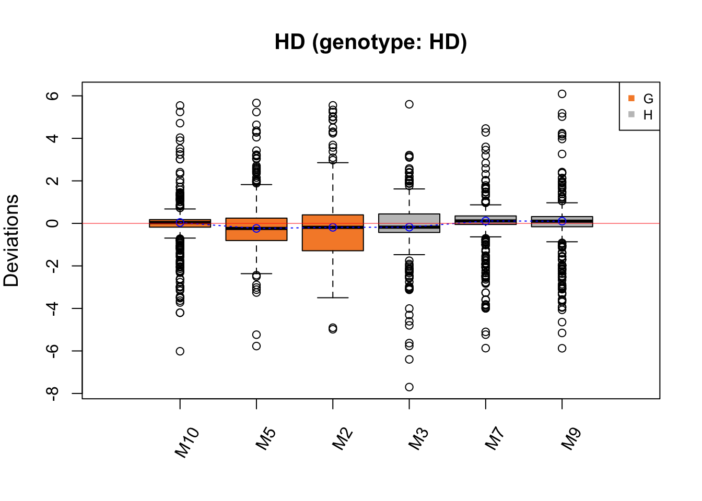
RleMicroRna2(object = t(hd.before_w), batch = hd.batch_w,
maintitle = 'HD (genotype: WT)')
The batch effect in HD data is not easily detected, but Cage G has a greater IQR than the other samples, which may indicate a batch effect.
2.4 Heatmap
Clustering analysis can be used to detect batch effects. Ideally samples with the same treatment will be clustered together, data clustered by batches instead of treatments indicate a batch effect. Heatmaps and dendrograms are two common approaches to visualise the clusters.
# Sponge data
# scale on OTUs
sponge.tss.clr.scale <- scale(sponge.tss.clr, center = T, scale = T)
# scale on samples
sponge.tss.clr.scale <- scale(t(sponge.tss.clr.scale), center = T, scale = T)
sponge.anno_col <- data.frame(Batch = sponge.batch, Tissue = sponge.trt)
sponge.anno_metabo_colors <- list(Batch = c('1' = '#388ECC', '2' = '#F68B33'),
Tissue = c(C = '#F0E442', E = '#D55E00'))
pheatmap(sponge.tss.clr.scale,
scale = 'none',
cluster_rows = F,
cluster_cols = T,
fontsize_row = 5, fontsize_col = 8,
fontsize = 8,
clustering_distance_rows = 'euclidean',
clustering_method = 'ward.D',
treeheight_row = 30,
annotation_col = sponge.anno_col,
annotation_colors = sponge.anno_metabo_colors,
border_color = 'NA',
main = 'Sponge data - Scaled')
In sponge data, samples are preferentially clustered by batch instead of tissue type, indicating a batch effect.
# AD data
ad.clr.scale <- scale(ad.clr,center = T, scale = T)
ad.clr.scale <- scale(t(ad.clr.scale), center = T, scale = T)
ad.anno_col <- data.frame(Batch = ad.batch, Treatment = ad.trt)
ad.anno_metabo_colors <- list(Batch = c('09/04/2015' = '#388ECC',
'14/04/2016' = '#F68B33',
'01/07/2016' = '#C2C2C2',
'14/11/2016' = '#009E73',
'21/09/2017' = '#CC79A7'),
Treatment = c('0-0.5' = '#0072B2', '1-2' = '#999999'))
pheatmap(ad.clr.scale,
scale = 'none',
cluster_rows = F,
cluster_cols = T,
fontsize_row = 4, fontsize_col = 6,
fontsize = 8,
clustering_distance_rows = 'euclidean',
clustering_method = 'ward.D',
treeheight_row = 30,
annotation_col = ad.anno_col,
annotation_colors = ad.anno_metabo_colors,
border_color = 'NA',
main = 'AD data - Scaled')
In AD data, samples within batch 14/04/2016 are clustered and distinct from other samples, also indicating a batch effect.
# HD data
hd.clr.scale <- scale(hd.clr,center = T, scale = T)
hd.clr.scale <- scale(t(hd.clr.scale), center = T, scale = T)
hd.anno_col <- data.frame(Batch = hd.batch, Treatment = hd.trt)
hd.anno_metabo_colors <- list(Batch = c('F' = '#388ECC', 'G' = '#F68B33',
'H' = '#C2C2C2', 'J' = '#009E73'),
Treatment = c('HD' = '#0072B2', 'WT' = '#999999'))
pheatmap(hd.clr.scale,
scale = 'none',
cluster_rows = F,
cluster_cols = T,
fontsize_row = 4, fontsize_col = 6,
fontsize = 8,
clustering_distance_rows = 'euclidean',
clustering_method = 'ward.D',
treeheight_row = 30,
annotation_col = hd.anno_col,
annotation_colors = hd.anno_metabo_colors,
border_color = 'NA',
main = 'HD data - Scaled')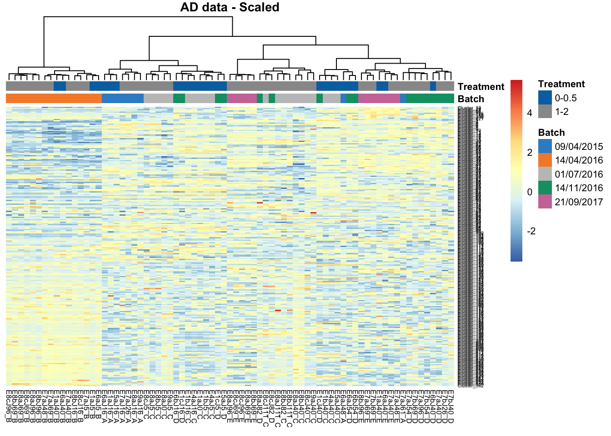
The batch effect in HD data is not obvious in this heatmap, as we observe not clustering according to batch.
Bibliography
Lin, Yingxin, Shila Ghazanfar, Kevin Wang, Johann A Gagnon-Bartsch, Kitty K Lo, Xianbin Su, Ze-Guang Han, et al. 2018. “scMerge: Integration of Multiple Single-Cell Transcriptomics Datasets Leveraging Stable Expression and Pseudo-Replication.” BioRxiv. Cold Spring Harbor Laboratory, 393280.